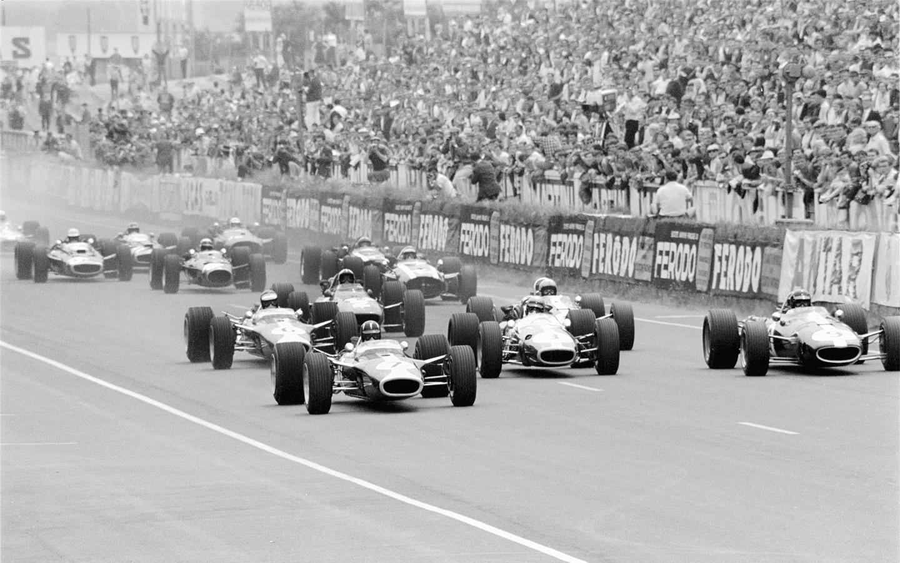
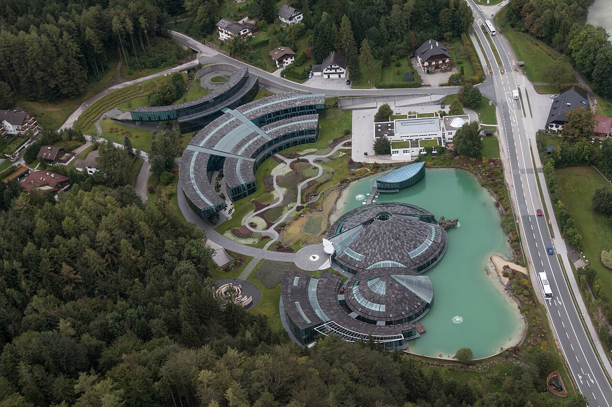
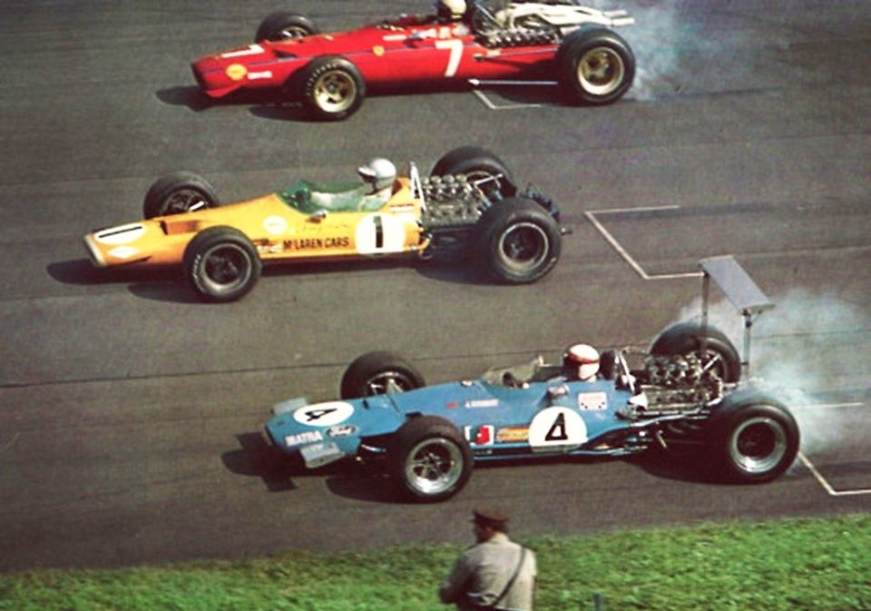
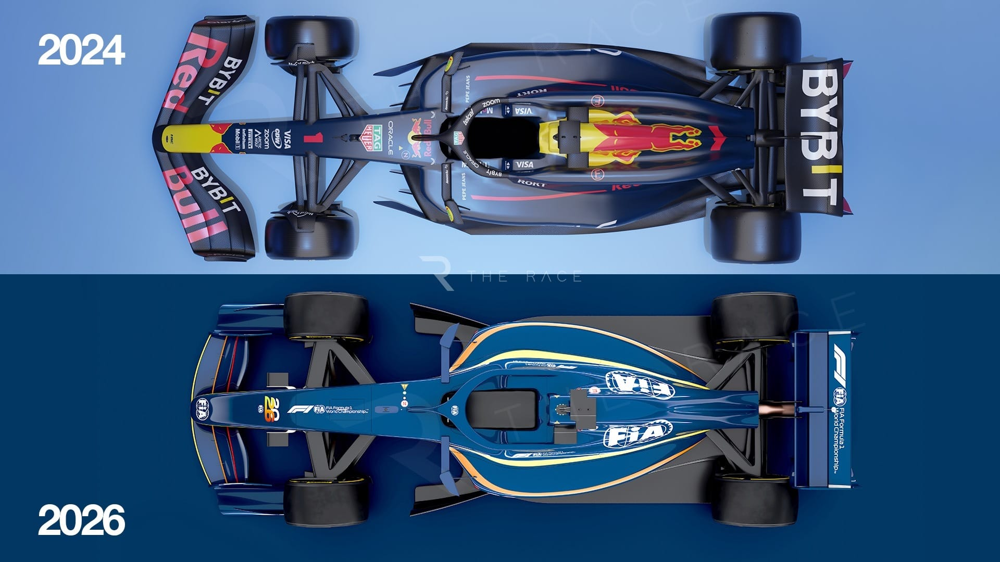
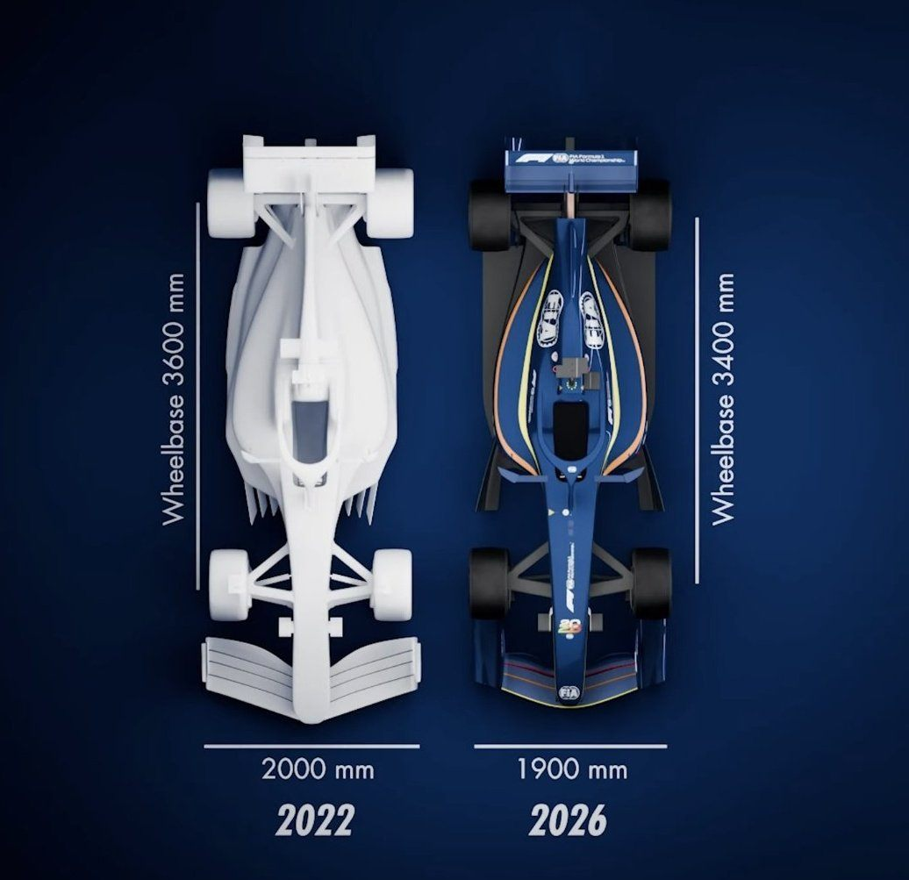
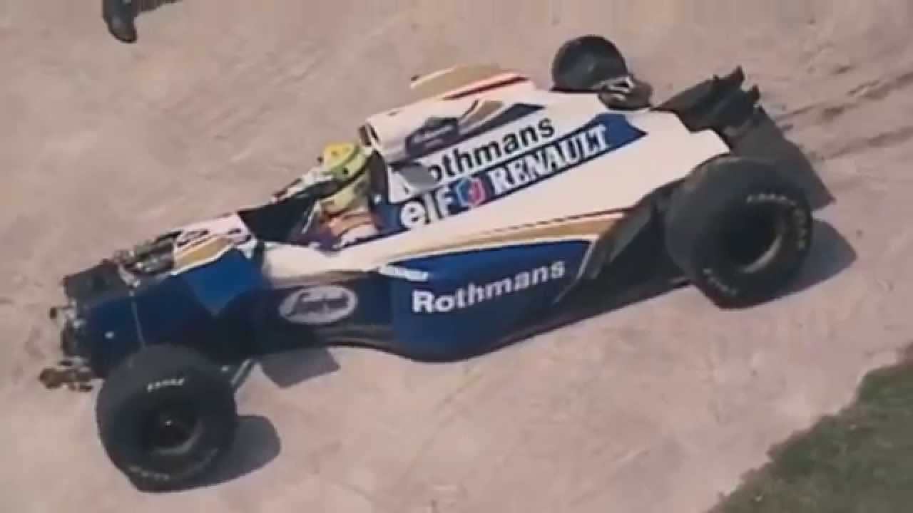
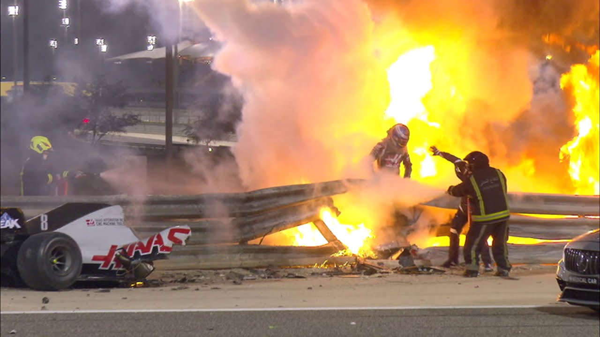
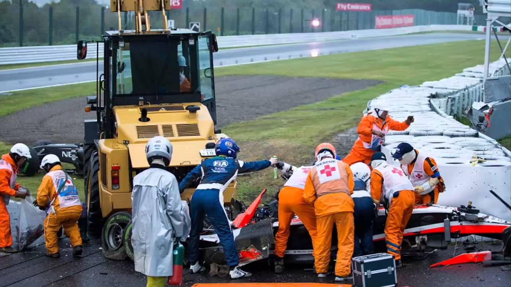

История
Зарождение Formula 1

Формула-1 (Ф1, англ. Formula One, Formula 1, F1) — чемпионат мира по кольцевым автогонкам на автомобилях с открытыми колёсами, который проводится ежегодно и состоит из этапов, называемых Гран-при, в соответствии с техническими нормами, требованиями и правилами, установленными Международной автомобильной федерацией (ФИА, англ. FIA).
Название исторически происходит от набора технических правил (так называемой «формулы»), которому должны соответствовать автомобили всех участников. Обозначение «Формула-1» является одной из нескольких таких «формул», наряду с «Формулой-2», «Формулой-3» и другими. С 1950 по 1980 год проводился чемпионат мира для гонщиков (англ. World Championship for Drivers), на смену которому в 1981 году пришёл чемпионат мира Формулы-1 (англ. Formula 1 World Championship), позже получивший современное название FIA Formula One World Championship.
Турнир находится под управлением Международной автомобильной федерации, а ответственной за коммерческое продвижение является группа компаний Formula One Group. Чемпионат мира проводится каждый год и состоит из отдельных этапов, имеющих статус Гран-при; в конце года подводятся итоги турнира с учётом суммы набранных за сезон очков. В сезоне 2026 года календарь включает 24 этапа.
Техника участников должна соответствовать техническому регламенту Формулы-1 и пройти тест на ударопрочность. Команды, участвующие в гонках Формулы-1, используют на Гран-при гоночные автомобили собственного производства.
Таким образом, задачей команды является не только нанять быстрого и опытного гонщика и обеспечить грамотную настройку и обслуживание машины, но и самостоятельно спроектировать и сконструировать автомобиль.
Однако бывают исключения: например, шасси команд Red Bull Racing и Scuderia Toro Rosso (с 2024 года RB) были очень похожи до 2009 года, так как обе команды и компания-изготовитель принадлежат концерну Red Bull GmbH.

Поскольку команды строят машины по собственным технологиям и ввиду высокой конкуренции, в Формуле-1 постоянно появляются оригинальные технические решения, что ведёт к прогрессу как гоночных машин, так и дорожных автомобилей.
Многие инновации Формулы-1, включая системы безопасности, гибридные силовые установки, аэродинамические решения и композитные материалы, впоследствии находят применение в серийных автомобилях.

Характеристики машин определяются техническим регламентом, за соответствием которому следят стюарды Международной федерации автоспорта.
В 2025 году технический регламент остаётся в целом стабильным, однако были внесены изменения в систему DRS, требования к гибкости антикрыльев и введены обязательные системы охлаждения пилотов для жарких гонок.
Регламент 2026г

Сезон 2026 года — сезон Формулы-1, в рамках которого проводится 77-й чемпионат мира по автогонкам в классе «Формула-1».
Международной автомобильной федерацией он признан высшим классом соревнований для гоночных автомобилей с открытыми колёсами. Чемпионат разыгрывается в серии гонок, или Гран-при, проводимых по всему миру. Гонщики и команды борются за титулы чемпиона мира среди гонщиков («личный зачёт») и чемпиона мира среди конструкторов («кубок конструкторов»), соответственно.
Американский автопроизводитель Ford начнёт поставлять силовые установки для Red Bull и их сестринской команды Racing Bulls. Французский автопроизводитель Renault прекратит разработку двигателей для своей дочерней команды Alpine. Взамен собственных заводских двигателей Alpine будет использовать поставляемые Mercedes силовые установки. Японский автопроизводитель Honda начнёт поставлять силовые установки для британской команды Aston Martin. Швейцарская команда Заубер станет заводской командой немецкого автопроизводителя Audi, который в 2026 году представит собственную силовую установку. Американский автоконцерн General Motors под брендом Cadillac присоединится к чемпионату и станет 11-й командой
Изначально чемпионат 2026 года должен был состоять из 24 этапов. Сезон стартовал 8 марта в Мельбурне, а завершиться должен 6 декабря в Абу-Даби. Гран-при Бахрейна и Гран-при Саудовской Аравии были отменены в связи с боевыми действиями на Ближнем Востоке, число этапов сезона снизилось до 22-х.

В первой гонке сезона победу с поула одержал Джордж Расселл, места на подиуме заняли напарник Расселла Кими Антонелли и Шарль Леклер из "Феррари". Спринт Гран-при Китая закончился новой победой Расселла, однако в квалификации свой первый поул в карьере завоевал Антонелли, который в возрасте 19 лет стал самым молодым обладателем поула в истории Формулы-1, побив рекорд Себастьяна Феттеля. Уже в гонке Антонелли реализовал свое преимущество в первую победу в своей карьере.
В новый регламент, который вступит в силу в 2026 году, наряду с техническим, спортивным и финансовым разделами планируется включить новый экологический раздел. В 2026 году вступает в силу новый технический регламент, утверждённый ФИА.
В результате изменений будут уменьшены вес и габариты автомобилей, а также мощность гибридных силовых установок (при этом использование электрической составляющей возрастёт). Использование регулируемого заднего антикрыла (DRS) будет заменено на Manual Override Mode.
Минимальный вес болида в сезоне 2026 года составляет 724 кг плюс номинальная масса шин. Колесная база автомобилей должна быть 3400 мм или меньше. Максимально допустимая ширина шасси составляет 1900 мм.
В 2026 году технический регламент на двигатели подвергся изменениям: для снижения расходов решено отказаться от MGU-H — генератора тепловой энергии.
Роль гибридной составляющей существенно вырастет. Организаторы чемпионата мира в классе "Формула-1" отказались от идеи перехода на 16-дюймовые колеса в сезоне-2026. В 2022 году "Королевские гонки" увеличили диаметр колес.
История написана кровью

1 мая 1994 года бразильский гонщик Формулы-1 Айртон Сенна погиб в результате столкновения его Williams FW16 с бетонной стеной в гонке на Гран-при Сан-Марино 1994 года, проходившей на автодроме Энцо и Дино Феррари в Италии. За день до этого во время субботней квалификации погиб австрийский гонщик Роланд Ратценбергер. Обе смертельные аварии прервали двенадцатилетний отрезок без гибели пилотов во время проведения этапов чемпионата мира Формулы-1, после трагедий с Жилем Вильнёвым и Риккардо Палетти в 1982 году. Смерть трёхкратного чемпиона Айртона Сенны стала поворотным моментом в безопасности Формулы-1, побудившем внедрение новых мер безопасности, благодаря которым на гоночных трассах никто не погибал в течение 20 лет до трагической аварии Жюля Бьянки на Сузуке во время Гран-при Японии 2014 года. Верховный суд Италии постановил, что причиной аварии, повлёкшей смерть Айртона Сенны, стала механическая неисправность.

29 ноября пострадал в аварии на трассе Сахир во время Гран-при Бахрейна. На скорости свыше 200 километров в час болид гонщика врезался в металлическое ограждение трассы, при этом произошло разрушение топливного бака с возгоранием топлива. Гонщик 28 секунд находился в центре возгорания, но смог самостоятельно выбраться из пламени. Сразу же после инцидента гонщик был отправлен на вертолёте в один из военных госпиталей Бахрейна, находясь в сознании. После аварии гонка была сразу же остановлена красными флагами, и была прервана примерно на полтора часа для устранения последствий аварии. В Гран-при Сахира Ромен Грожан не принял участия, его заменил Пьетро Фиттипальди. В аварии Грожан также получил ожоги рук, из-за которых он не стал принимать участие и в финальной гонке сезона.

5 октября 2014 года во время Гран-при Японии в сложных погодных условиях Бьянки неудачно вылетел с трассы на последних кругах, врезавшись на скорости 126 км/ч в работавший в зоне безопасности эвакуатор, который убирал болид Адриана Сутиля, разбившего здесь машину кругом ранее. При столкновении Бьянки ударился головой о противовес эвакуатора. Гонка была остановлена на 9 кругов раньше запланированного. Благодаря любительской записи стало известно, что левая часть болида Marussia была очень сильно повреждена, а каркас уничтожен, так как он попал под трактор. Удар был настолько сильным, что болид Сутиля, который в то время был уже поднят трактором, упал на землю. Первая медицинская помощь была оказана уже на месте аварии, перед тем как его транспортировали в медицинский центр трассы. Из-за сильного дождя использование медицинского вертолёта было невозможно. В результате аварии француз получил тяжёлую травму головы и был переправлен в ближайший госпиталь, где ему была сделана срочная операция по удалению образовавшейся гематомы. Но после дополнительного обследования врачи поставили диагноз — диффузное аксональное повреждение головного мозга.
По информации из базы данных FIA по гоночным инцидентам автомобиль Бьянки вылетел с трассы на скорости 213 км/ч и столкнулся с эвакуатором через 2,61 секунды на скорости 126 км/ч. Перегрузка, измеренная датчиками в наушниках, составила 92g, расчётная пиковая перегрузка — 254g.